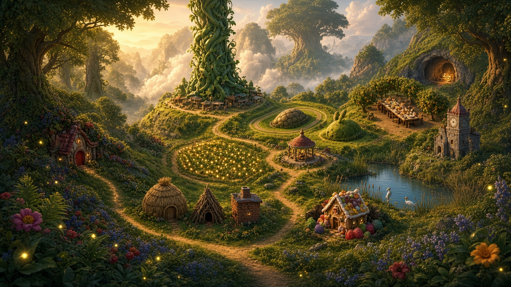
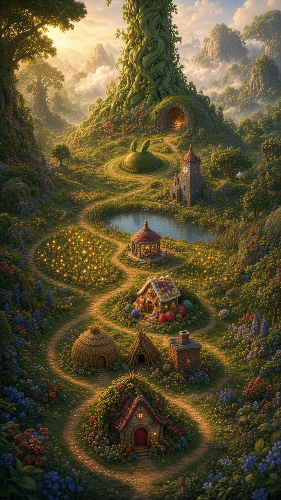
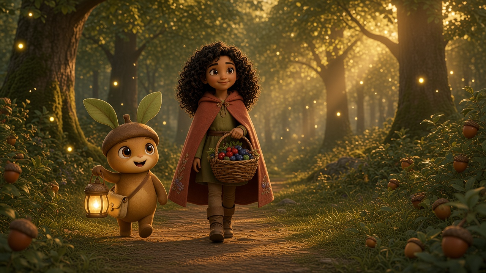
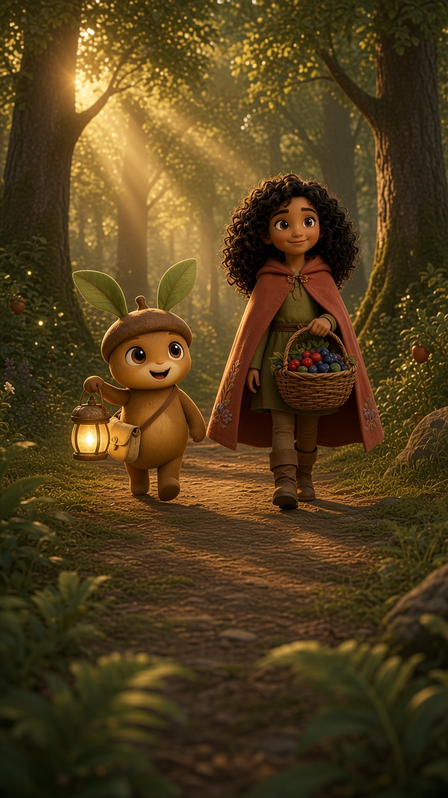

點一下開始
開啟語音，聽小豆用中文或英文說話。學習內容兩種語言都會看見。
Tap to start · unlocks speech for this session


童話數學谷數學谷
選一條小路開始第 1 集★ 0 / 36


第 1 集 · 莓果小路第 1 集
數到 99 的位值 · Place value to 99★ 0 / 36
第 1 集 · 答對了答對了
You earned a star★ 1 / 36
答對了！
4 個十加 7 個一，一共是 47。 得到 1 顆星星。
You did it! 4 tens and 7 ones make 47. You earned 1 star.設定
語速
自動播放語音
答對／答錯音效
減少動畫
重設進度
語音：準備中
示範用瀏覽器語音。正式版請用可商用授權的錄音或 TTS，中英同一角色聲線。